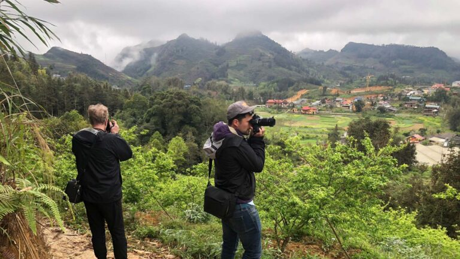

PHOTOGRAPHY TOURISM

Vietnam’s stunning landscapes, urban streets, and cultural heritage make it a hotspot for photography enthusiasts.
1. Nature and Landscape Photography
Vietnam’s diverse landscapes offer photographers a wealth of natural beauty, from mountains to waterways.
| Iconic Natural Scenery |
National Parks |
| Ha Long Bay, Lan Ha Bay, Sapa terraces, and Mekong Delta waterways provide breathtaking panoramas and sunrise/sunset opportunities. |
Phong Nha-Ke Bang and Ba Be National Parks feature caves, waterfalls, and wildlife, ideal for capturing nature in its pristine form. |
2. Cultural and Street Photography
Capture Vietnam’s vibrant everyday life, markets, and local traditions through the lens.
| Lantern-Lit Streets & Markets |
Festivals & Ceremonies |
| Hoi An’s lantern streets, Hanoi Old Quarter, and markets like Ben Thanh or Dong Xuan showcase colorful street life, food stalls, and local interactions. |
Traditional festivals and local ceremonies reveal costumes, rituals, music, and performances, perfect for dynamic cultural photography. |
3. Architectural Photography
Explore Vietnam’s historic and modern architecture, capturing the fusion of past and present.
| Historical Buildings |
Modern Urban Structures |
| French colonial buildings, temples, pagodas, and citadels in Hanoi and Ho Chi Minh City provide timeless architectural shots. |
Bridges, towers, and city skylines offer dynamic urban perspectives, ideal for night photography and modern design compositions. |
4. Workshop and Tour-Based Photography
Learn photography techniques and capture optimal moments with guided tours and structured workshops.
| Guided Photography Tours |
Special Sessions |
| Tours teach composition, lighting, storytelling techniques, and camera settings for both beginners and advanced photographers. |
Sunrise/sunset sessions, river cruises, and night markets allow capturing unique lighting conditions for dramatic photos. |
Photography tourism transforms travel into a creative journey, letting visitors capture Vietnam’s landscapes, culture, and people through unforgettable visual stories.
s